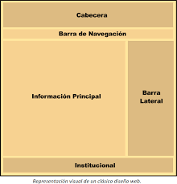
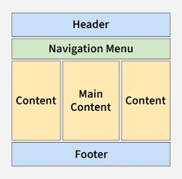

CONCEPTOS DE RED: Red informática: Es un sistema de dispositivos conectados entre sí que se comunican y comparten recursos entre ellos. Permiten que los ordenadores colaboren, transfieran datos y accedan a información compartida (como archivos, correos electrónicos e impresoras) de un dispositivo a otro. Red LAN: Es una red informática que conecta dispositivos en un área geográfica pequeña y limitada, como una casa, oficina o edificio, permitiéndoles compartir recursos (archivos, impresoras) e Internet de forma eficiente, ya sea por cable (Ethernet) o inalámbrica (Wi-Fi), ofreciendo alta velocidad y control de seguridad en un entorno local. Muchas LAN forman una WAN Red WAN: Es una red de telecomunicaciones que conecta computadoras y redes locales (LAN) a través de grandes distancias geográficas (ciudades, países), permitiendo la comunicación entre oficinas remotas, centros de datos o usuarios en general, siendo Internet la WAN más grande del mundo. ¿Qué es Internet?: Internet es una vasta red global que conecta millones de computadoras, personas y otros dispositivos en todo el mundo. Nos permite acceder a información desde cualquier lugar, enviar mensajes al instante e interactuar en línea. ¿Qué es la web?: La Web (World Wide Web) es un sistema global de documentos y recursos interconectados (páginas web, imágenes, videos) que se accede a través de Internet mediante navegadores, funcionando como una aplicación sobre esta red para compartir información de forma multimedia y enlazada. ¿Qué es un navegador? Un navegador web (o browser) es un programa o aplicación que permite acceder, ver e interactuar con los contenidos de la World Wide Web (Internet), interpretando códigos como HTML para mostrar páginas, videos e imágenes de forma visual y comprensible para el usuario. El navegador interpreta el código, HTML generalmente, en el que está escrita la página web y lo presenta en pantalla permitiendo al usuario interactuar con su contenido y navegar. ¿Qué es un protocolo en informática? Un protocolo en informática es un conjunto de reglas y estándares que definen cómo los dispositivos se comunican, intercambian datos y procesan información en una red, actuando como un lenguaje común para asegurar una transmisión efectiva y precisa. Estos protocolos determinan el formato, el tiempo y el orden de los mensajes, permitiendo que hardware y software diferentes interactúen sin problemas, como cuando usas el navegador (HTTP) o envías un correo (SMTP). ¿Qué es HTTP y HTTPS? HTTP (Protocolo de Transferencia de Hipertexto) es el protocolo básico para la comunicación web, enviando datos en texto plano, mientras que HTTPS (HTTP Seguro) es su versión segura, que usa cifrado TLS/SSL para proteger la información confidencial (como contraseñas o datos bancarios) entre el navegador y el servidor, mostrándose con un candado en la barra de direcciones y siendo esencial hoy en día. La clave es que HTTPS añade una capa de seguridad (cifrado) que convierte los datos en caracteres ininteligibles para posibles interceptores, algo que HTTP no hace. ¿Qué es la dirección IP? Una Dirección IP (Protocolo de Internet) es un identificador numérico único asignado a cada dispositivo conectado a una red (como Internet), que funciona como una "dirección postal" digital para permitir la comunicación y el envío de datos entre dispositivos, como ordenadores, smartphones y routers. Es esencial para que Internet funcione, ya que identifica a los dispositivos y dirige la información a su destino correcto, similar a cómo una dirección física dirige el correo. IP privada: Una IP privada es una dirección numérica única asignada a dispositivos (ordenadores, móviles, impresoras) dentro de una red local (LAN), como tu casa u oficina, que permite que se comuniquen entre sí sin ser visibles ni accesibles directamente desde Internet. IP pública: Una IP pública es la dirección única y visible en Internet que identifica tu conexión o router ante el resto del mundo, permitiendo que los datos lleguen a tu red desde cualquier lugar, como la dirección postal de tu edificio. Es asignada por tu Proveedor de Servicios de Internet (ISP) y es fundamental para que puedas navegar, ya que identifica tu hogar digitalmente para que servidores y servicios te encuentren y te envíen información. ¿Qué es el proveedor de servicios de Internet? Un proveedor de internet (ISP, por sus siglas en inglés) es una empresa que te conecta a internet, actuando como un portal entre tus dispositivos y el mundo en línea, mediante tecnologías como fibra, DSL o satélite, y ofreciendo servicios adicionales como email, alojamiento web y seguridad. Básicamente, pagas una suscripción para "alquilar" su red y poder navegar, usar apps y servicios en línea. Ejemplos: Movistar, Digi, Vodafone. ¿Qué es el alojamiento web o hosting? El alojamiento web (o hosting) es un servicio que permite almacenar los archivos, datos e imágenes de una página web en un servidor, haciéndolos accesibles en Internet para cualquier usuario, funcionando como un "lugar" o "espacio digital" donde reside tu sitio web para que esté siempre en línea, de manera similar a alquilar un espacio en un hotel o local comercial. ¿Qué es un dominio? Un dominio web es la dirección única y fácil de recordar que identifica a un sitio web en Internet, como google.com o miempresa.es, permitiendo a los usuarios acceder a él sin memorizar complejas direcciones IP numéricas (ej: 192.168.1.1). Funciona como la dirección postal de tu "casa digital", traduciendo el nombre a una IP para que tu navegador encuentre el servidor correcto y muestre la página. ¿Qué es el DNS? El DNS (Sistema de Nombres de Dominio) es la "agenda telefónica" de Internet, un sistema que traduce nombres de dominio fáciles de recordar (como www.google.com) en direcciones IP numéricas (como 142.250.186.46) que las máquinas usan para encontrar y conectar con servidores web, permitiendo navegar por Internet sin memorizar complejas series de números. Funciona como un directorio distribuido a nivel mundial, donde los servidores DNS buscan y entregan la dirección IP correcta cuando escribes una URL en tu navegador. Páginas estáticas vs dinámicas Las páginas web estáticas muestran contenido fijo que es el mismo para todos los usuarios y solo cambia si un desarrollador lo modifica manualmente (HTML/CSS); son rápidas y simples, ideales para sitios informativos básicos, mientras que las dinámicas generan contenido en tiempo real, adaptándose a cada usuario o interacción (bases de datos, backend), permitiendo interactividad y personalización, perfectas para e-commerce, redes sociales o blogs. ¿Qué es un CMS? Un CMS (Sistema de Gestión de Contenidos) es una aplicación de software que permite crear, editar, organizar y publicar contenido digital (texto, imágenes, videos) para una página web sin necesidad de saber programar, usando una interfaz gráfica fácil de usar que separa el contenido del diseño, facilitando la colaboración y actualización constante de sitios como blogs, e-commerce o corporativos, siendo el WordPress el ejemplo más popular. ¿Qué es el cliente-servidor? El modelo cliente-servidor es una arquitectura de red donde un cliente (tu dispositivo o navegador) solicita recursos o servicios a un servidor (una computadora potente), que los procesa y los entrega, como al navegar por una web (navegador/servidor web) o consultar el correo (app de correo/servidor de correo). Funciona mediante peticiones y respuestas, centralizando recursos y tareas en el servidor para una gestión eficiente. DISEÑO DE WEB: LAYOUT El layout (o maquetación/diseño) es la disposición y organización visual de elementos en un espacio, ya sea una página web, un documento, una tienda física o un almacén, con el objetivo de guiar al usuario, optimizar procesos y mejorar la estética y funcionalidad. Define dónde van textos, imágenes, maquinaria, etc., para crear una estructura lógica y eficiente, siendo un plan o esquema fundamental antes de la implementación final.
 